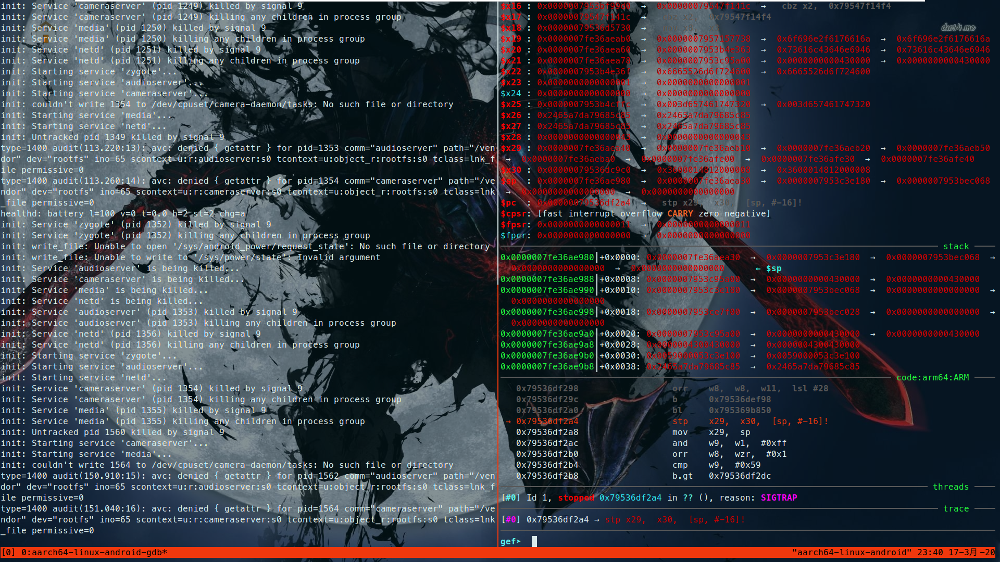

Adroid Studio
下载
下载地址: https://developer.android.com/studio
如果觉得android studio太大了，可以只下载Command line tools，我这里直接装studio比较省事。一般studio里面会内置基于qemu的emulator，我们主要就是需要这个用来模拟安卓设备。
安装Android Studio
mkdir android_sdk && cd android_sdk
tar -xf android-studio-ide-192.6241897-linux.tar.gz
cd ./android-studio/bin/
./studio.sh 按照引导安装完毕，这里注意要想使用emulator，需要cpu支持VT虚拟化，我的环境是虚拟机，所以直接在vm的cpu设置里面勾选即可。安装完后，在home目录下会新建一个~/Android/Sdk目录，进入这里就能看到里面Sdk安装的Sdk tools，添加一下环境变量，来更方便的使用各种工具。
export PATH=/path/to/Android/platform-tools:$PATH
export PATH=/path/to/Android/emulator:$PATH 再执行命令添加环境变量，这样就能在任意一个目录执行studio.sh打开程序了。
export PATH=/path/to/android-studio/bin/:$PATH 创建avd
打开android studio，在Configure选项卡中打开AVD Manager，点击Create，我这里选择的设备是Pixel 2，system image可以选择x86架构，x86_64，arm64，armeabi。看自己情况选择，我这里选择了arm64-v8a, api level为25的image，后面选择finish即可创建一个avd。
查看创建是否成功
$ emulator -list-avds
Pixel_2_API_25启动虚拟环境
emulator -avd Pixel_2_API_25 -no-audio -no-boot-anim -no-window -no-snapshot 查看当前虚拟环境的内核版本
$ adb shell uname -a
Linux loca 3.10.0+ #258 SMP PREEMPT Fri May 19 12:03:16 PDT 2017 aarch64 编译内核
下载goldfish源代码和工具链
git clone https://aosp.tuna.tsinghua.edu.cn/kernel/goldfish.git
git clone https://aosp.tuna.tsinghua.edu.cn/platform/prebuilts/gcc/linux-x86/arm/arm-linux-androideabi-4.6
git clone https://aosp.tuna.tsinghua.edu.cn/platform/prebuilts/gcc/linux-x86/x86/x86_64-linux-android-4.7
git clone https://aosp.tuna.tsinghua.edu.cn/platform/prebuilts/gcc/linux-x86/aarch64/aarch64-linux-android-4.8 上面三个分别是编译arm，x86_64，aarch64架构安卓内核所需的工具链，视自己的需求决定用哪一个。我这里使用aarch64-linux-android-4.8进行编译。
编译
Goldfish是一种虚拟的ARM处理器，在android的仿真环境中使用。这里由于之前查看虚拟环境时看到的内核版本为3.10，为了兼容我这里也选择编译3.10内核。
git branch -a
git checkout -t remotes/origin/android-goldfish-3.10 -b goldfish3.10在执行make前，需要配置好相关的环境变量。
export ARCH=arm64
export PATH=/path/to/aarch64-linux-android-4.8/bin/:$PATH
export CROSS_COMPILE=aarch64-linux-android-可以在/path/to/goldfish/arch/arm64/configs目录下查看源代码自带的arm64的config文件。我们这里选择ranchu_defconfig。然后在ranchu_defconfig的基础上执行make menuconfig 添加 Compile the kernel with debug info、Enable dynamic printk() support、KGDB的选项。
make ranchu_defconfig
make menuconfig
make -j4安卓内核编译速度很快几分钟就搞定了。我们从goldfish根目录下拿到vmlinux用作gdb调试的符号文件，再从/path/to/goldfish/arch/arm64/boot/目录下拿到Image文件来替换虚拟安卓环境的映像。
测试
使用emulator启动安卓虚拟环境。emulator参数的含义参考https://developer.android.com/studio/run/emulator-commandline
emulator -show-kernel -kernel ./Image -avd Pixel_2_API_25 -no-audio -no-boot-anim -no-window -no-snapshot -qemu -s启动之后终端会显示各种内核的调试信息，我们在另外一个终端使用adb shell进入虚拟环境
$ adb shell
generic_arm64:/ $ uname -a
Linux loca 3.10.0+ #1 SMP PREEMPT Mon Mar 16 20:25:26 CST 2020 aarch64此时内核版本已经替换成我们编译的Image映像了。
调试内核
编译gdb
因为前面下载的工具链里面对应版本的gdb版本都太低了，而且有的不支持python，还有的是python2版本的，这样我们调试的时候就不能使用插件来提升效率了(gdb的插件目前支持arm的好像只有gef，而gef需要python3)。所以我们这里自行交叉编译gdb。因为是调试内核所以gdbserver就不需要了。gdb源码下载地址 https://mirrors.tuna.tsinghua.edu.cn/gnu/gdb/, 我这里选择的版本是7.11.1。解压压缩包后，配置好config，然后即可编译。如果是要调试其他架构的内核的话，只需要把target选项给换成对应的即可。
./configure --target=aarch64-linux-gnueabi --with-python=/usr/bin/python3
make -j4从/path/to/gdbsource/gdb/目录拿到对应的gdb bin文件，需要注意的是，如果直接从当前目录./gdb这样运行gdb会报错，应该要这样
./gdb -data-directory /usr/share/gdb如果觉得麻烦的话，就将当前gdb bin文件所在的目录添加进环境变量。
调试
先启动虚拟环境，随后使用gdb进行调试。
$ aarch64-linux-android-gdb -q vmlinux
GEF for linux ready, type `gef' to start, `gef config' to configure
80 commands loaded for GDB 7.11.1 using Python engine 3.5
Reading symbols from vmlinux...done.
gef➤ target remote localhost:1234 
这样调试环境就初步准备就绪了。
Reference
https://zhuanlan.zhihu.com/p/56718840
http://pwn4.fun/2016/08/19/Android%E5%86%85%E6%A0%B8%E6%BA%90%E7%A0%81%E7%BC%96%E8%AF%91%E8%B0%83%E8%AF%95/
https://blog.csdn.net/zhangjg_blog/article/details/84291663